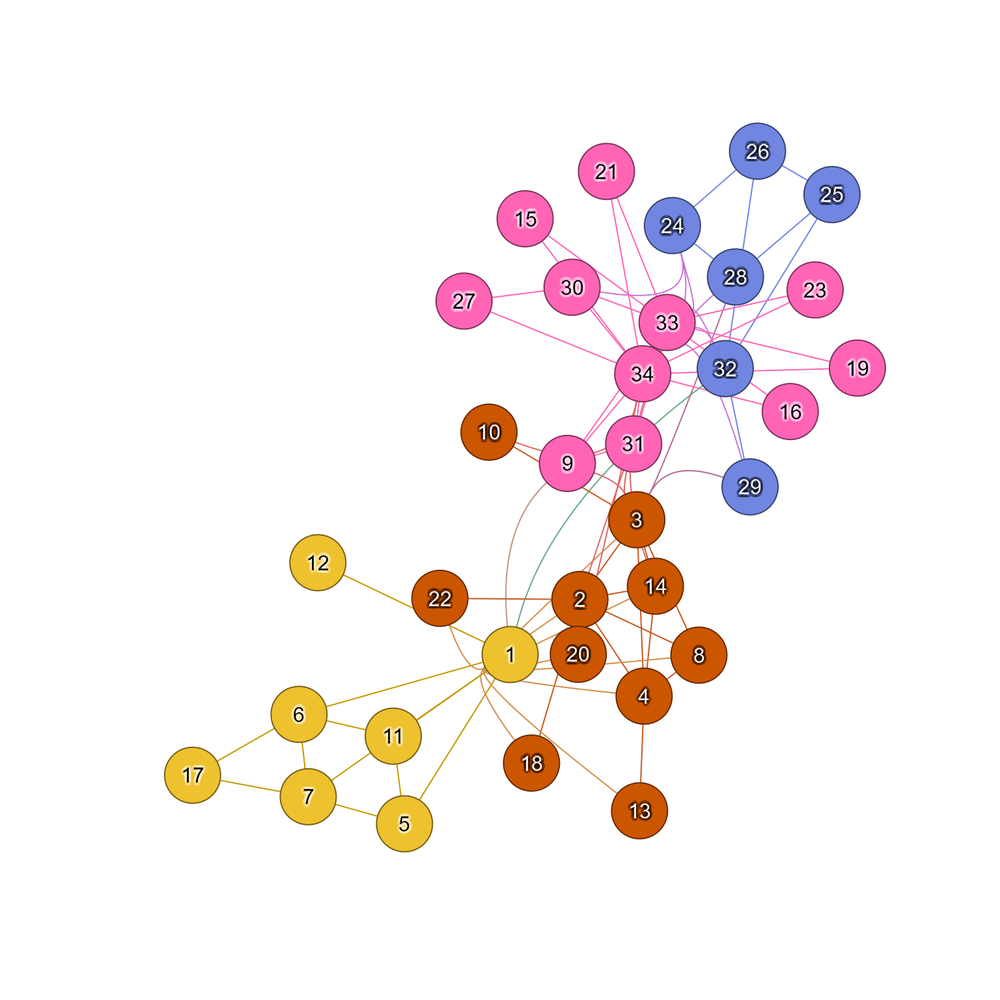

Bundle edges using node groups
Usage
edge_bundle_nodegroups(
g,
nodegroups,
shape = NULL,
params = NULL,
midpoint = 0.5,
detail = 10,
draw_lines = TRUE,
nodegroup_midpoints = NULL,
linear_cor_threshold = 1,
bundle_style = getOption("jam.bundle_style", "bezier"),
bundle_self = FALSE,
verbose = FALSE,
debug = getOption("debug", FALSE),
...
)Arguments
- g
igraphthat contains layout coordinates in graph attributes, stored asigraph::graph_attr(g, "layout").- nodegroups
listof node names, or object with class"communities"as produced byigraph::cluster_*methods such asigraph::cluster_walktrap(). Note that every node must be represented.- shape
character(optional) used to override thevertex.shapepassed inparams. It is recycled to the number of nodes, for example byigraph::vcount(g).- params
functionrepresentingigraphplotting parameters used at rendering time. The output is also produced byparse_igraph_plot_params()for use injam_igraph()plotting, and is passed to other node and edge rendering functions.- midpoint
numericvector of one or more values ranging from0to1that define control point positions along the line between two nodegroup center coordinates. When one nodegroup contains only one node, this line segment is shortened to end at that node border after clipping the corresponding node shape. The position along the line is defined relative to the first node in the edge, toward the second node in the edge. Usingmidpoint=0.5guarantees the control point is the exact middle, whilemidpoint=c(0.2, 0.8)will use two control points at 20% and 80% distance along the line segment resulting in an edge that more closely follows the line segment.- detail
integernumber of intermediate points along the spline to render for each edge.- draw_lines
logicalindicating whether to render the edge splines after calculating them.- nodegroup_midpoints
listexperimental support for defining specific control points used by bundled edges. Not fully implemented as yet. In future, it will require two nodegroups to be defined for each set of control point coordinates, with no requirement for the location of control points.- linear_cor_threshold
numericvalue between 0 and 1. Coordinates for each edge, and intermediate control point coordinates are used inxspline()to create a curved spline from node to node. However, when the nodes and intermediate control points are already linear, the edge will be treated as a linear edge. To test for linearity,cor()correlation is calculated, and values at or abovelinear_cor_thresholdare considered linear.The driving problem is when the control point is colinear with two nodes, and the control point is positioned outside the two nodes. Without this modification, the line would appear to pass from one node beyond the other node, with an arrow (if directed) pointing back to the other node from the opposite direction.
- bundle_style
characterstring describing the type of curvature to use for edge bundles:"bezier": (default) callsbezier::bezier()to define a bezier curve using the edge control points."xspline": callsgraphics::xspline()to define an XSpline curve using the edge control points, however the method is customized to include each edge endpoint twice, which makes the intermediate curve much rounder than normal."angular": callsgraphics::xspline()to define an XSpline curve using the edge control points. This shape tends to appear angular, thus the name."bezierPath": callsggforce:::bezierPath()whenggforceis available, producing a bezier curve using the edge control points. Note this method appears identical to"bezier"above, and will likely be removed in a future release."subway": experimental method that uses the"angular"appearance, with more repeated intermediate control points intended to group all bundled edges to the same linear segment. The intent is to "dodge" edges along the line segment, similar to the appearance of subway maps, however it is not fully implemented.
- bundle_self
logicalto indicate whether edges that begin and end in the same nodegroup should be bundled through the nodegroup center coordinate.bundle_self=FALSEforces all edges within a nodegroup to be rendered as straight lines, therefore not using the nodegroup center as the control point.bundle_self=TRUEoverrides the validation check that requires the distance between center points of two nodegroups to have distance at least 0.5% the layout coordinate span. It can be a visual aid to have connections bundle through the center of the nodegroup, especially when the nodegroup is almost fully connected.
- verbose
logicalindicating whether to print verbose output.- debug
logicalindicating whether to plot debug output that may be helpful in understanding the edge bundle control points. To specify debug only for edge bundling, use the substring "bundl", for exampleoptions("debug"="bundling").- ...
additional arguments are ignored.
Value
data.frame with each edge spline point represented
on its own row, with breaks in edges defined by NA coordinates.
Details
This edge bundling technique relies upon some form of
node grouping, usually derived from network community
detection, or from bipartite nodesets (see
get_bipartite_nodeset() for details.)
Given a set of node groups, edges are bundled entering and exiting each node group, along the linear path between the two node group center positions, using a spline function and intermediate control points.
The default spline uses the initial node positions, and the
midpoint along the line between the two respective node groups.
The midpoints can be adjusted with the argument midpoint
and a vector of one or more fractional positions between 0 and 1.
A useful alternative is midpoint=c(0.3, 0.7) which adds
two control points along the linear path between node group
centers, and tends to make the edges bundle closer together
for a longer distance.
When used with bipartite nodesets, edges are bundled between
each nodeset and individual nodes. The edge bundling rules are
the same, with the default midpoint=c(0.4, 0.6) being centered at half
the distance between the nodeset center, and the single node.
In this case, the midpoint is directional, always pointing
from the nodeset to the single node, therefore can be adjusted
closer to the nodeset center with midpoint=0.2 or closer to
the single node with midpoint=0.8.
See also
Other jam igraph functions:
communities2nodegroups(),
drawEllipse(),
edge_bundle_bipartite(),
fixSetLabels(),
flip_edges(),
get_bipartite_nodeset(),
highlight_edges_by_node(),
igraph2pieGraph(),
label_communities(),
mem2cnet(),
mem2emap(),
nodegroups2communities(),
rectifyPiegraph(),
removeIgraphBlanks(),
subsetCnetIgraph(),
subset_igraph_components(),
sync_igraph_communities()
Examples
# using community detection
karate <- igraph::make_graph("Zachary")
igraph::V(karate)$name <- as.character(seq_len(igraph::vcount(karate)))
# run any igraph::cluster_*()
wc <- igraph::cluster_louvain(karate)
# define list
nodegroups_wc <- split(igraph::V(karate)$name, wc$membership)
# bonus points for colorizing nodes and edges by community
igraph::V(karate)$color <- colorjam::group2colors(igraph::membership(wc));
igraph::V(karate)$label.color <- jamba::setTextContrastColor(igraph::V(karate)$color);
igraph::V(karate)$frame.color <- jamba::makeColorDarker(igraph::V(karate)$color);
karate <- color_edges_by_nodes(karate);
# update graph layout
layout_xy <- igraph::layout_with_graphopt(karate);
igraph::graph_attr(karate, "layout") <- layout_xy;
jam_igraph(karate,
edge_bundling="nodegroups",
nodegroups=nodegroups_wc,
use_shadowText=TRUE);
